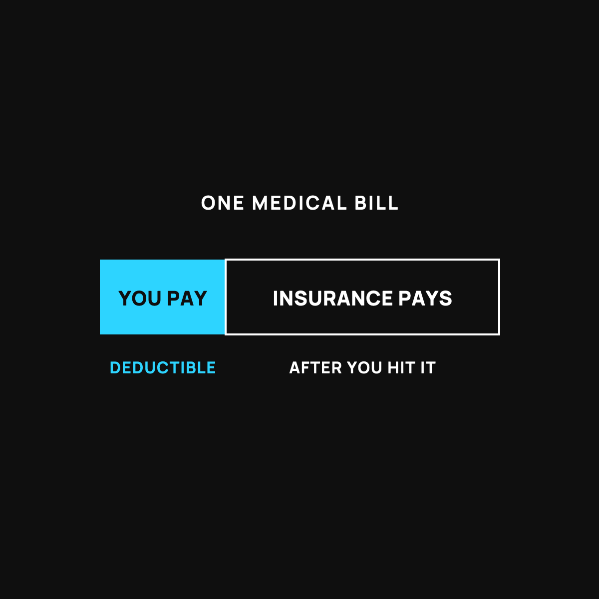

What a Deductible Really Means (No Jargon)
The part of the bill that's yours before the umbrella opens.
A deductible is the part of a medical bill you pay yourself before your insurance pays anything. If your deductible is $3,000, the first $3,000 of care each year is on you. Premium is the monthly bill to have insurance, copay is the small flat fee at the visit, and the out-of-pocket max is the most you'll pay in a year.

A deductible is the part of a medical bill you pay yourself before your insurance pays anything. That's it. That's the whole idea. But because nobody says it that plainly, a lot of people find out the hard way. Let's fix that.
The umbrella that opens late
Picture a storm. You've got an umbrella, but it has a strange rule: it won't open until the first inch of rain has already fallen on your head. Only after that first inch does it pop open and keep the rest off you.
That first inch is your deductible. It's the amount of the bill that lands on you before the insurance umbrella opens. Once you've paid your share up to that line, the plan starts doing its job.
So if your deductible is $3,000, that means you cover the first $3,000 of care out of your own pocket during the year. Only after that does the plan start picking up the bigger share.
Why the bill still surprises people
Here's the trap. You pay for insurance every single month. So when a bill shows up anyway, it feels like a mistake. It isn't. You were standing under the umbrella the whole time. It just hadn't opened yet, because the first inch hadn't fallen.
I dug into that exact gut-punch, the big bill that shows up even though you are insured.
Three words that ride along with "deductible"
Three other words usually show up on the same page. Here they are in plain English.
Premium is just the monthly bill you pay to have insurance at all. You pay it whether you see a doctor or not, like a gym membership.
Copay is a small flat fee you pay at the visit, like $30 to see the doctor. It's the same every time, no math required.
Out-of-pocket max is the ceiling. It's the most you'll have to pay in a whole year. Once you hit it, the plan covers the rest. Think of it as the highest the water can rise before it stops.
The part that saves you money
Here's the useful bit. If you haven't hit your deductible yet, you're paying full price for care anyway. That's exactly when it pays to ask what something costs before you get it, and to ask for the cash price. Sometimes paying cash is cheaper than the "insurance" price while you're still under your deductible. I showed how to ask for the cash price.
The takeaway
A deductible is just the first chunk of the bill that's yours before the umbrella opens. Premium is the monthly cost to have the umbrella. Copay is the small fee at the door. Out-of-pocket max is the ceiling on your worst year. None of it is complicated once somebody lays it flat. Now you'll see the bill coming, instead of it seeing you first.
Questions I get about this
What's the difference between a deductible and a premium?
The premium is the monthly bill you pay to have insurance at all, whether you see a doctor or not, like a gym membership. The deductible is the chunk of care costs you cover yourself each year before the plan starts paying its bigger share.
What is an out-of-pocket maximum?
The ceiling. It's the most you'll have to pay for covered, in-network care in a whole year. Once you hit it, the plan covers the rest. For 2026 that cap is about $10,600 for one person and $21,200 for a family, which is real protection, but also a lot of money.
Should I ask for the cash price if I haven't met my deductible?
Yes. Until you hit your deductible you're paying full price anyway, so it pays to ask what something costs before you get it and ask for the cash price. Sometimes cash is cheaper than the insurance price. Here's how to ask.

Written by David Dewese
Normal guy with a full-time job, wife, and kids. Spent twenty years pursuing music and creative ventures before starting a family. Sharing tips and tricks on how to thrive while living on an artist's income. Not a financial advisor. More about me.
New here?
Normaltown USA is plain-English money and healthcare help for normal people, written by a regular guy with a family of four. No jargon, no hype. Start here, or read the FAQ.